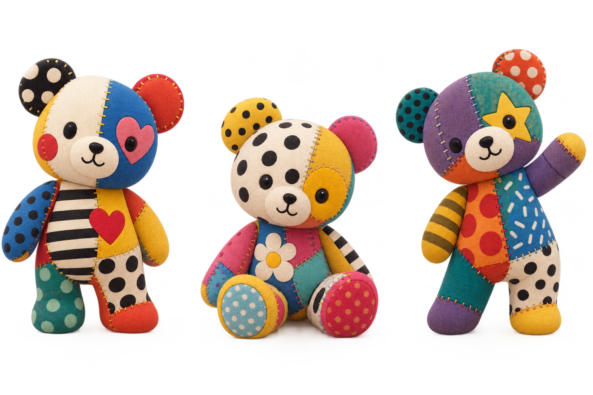
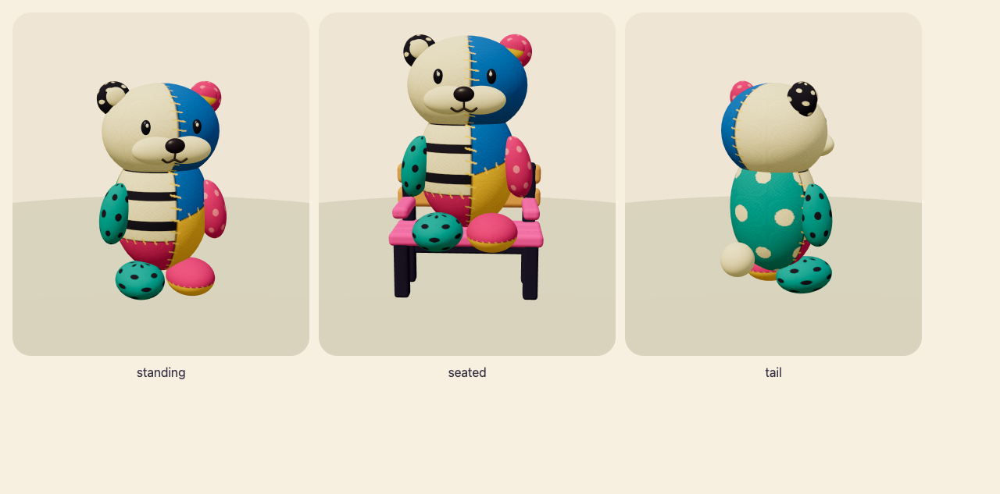

布の住人と、まんまるしっぽ
カワウソ1体に、色の違う布と縫い目。しっぽは、クリーム色の小さなまんまるに。
patchwork-20260908-2732124deadc
mystic-island-v1 / mystic-island-living-v4 / patchwork-otter-v1
実アプリ: http://127.0.0.1:5318 · 390×844 / 768×1024 · 19画面
参考と造形

ユーザーの参考画像
実リグを拡大した造形確認。下の画像がアプリの実画面です。スマートフォン · 390×844
通常の動きとタッチ操作。実際の初回設定・回答でベンチを得て、座る姿まで確認。
タブレット · 768×1024
動きを減らす設定で、同じ入力・着座・復旧を確認。
同じproduction buildの実画面です。子どもの独立した観察、実機、公開先への反映は別途確認が必要です。検証記録